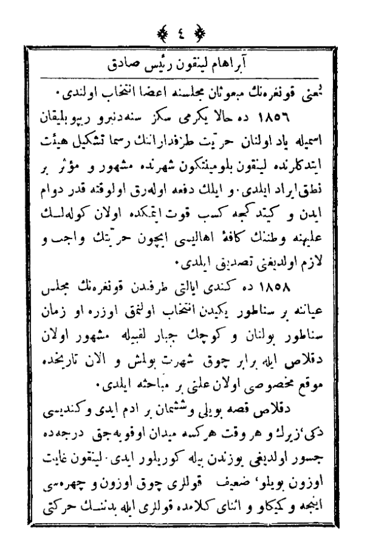

Abraham Lincoln
Reis-i Sadık
Eser
Muallim ?

Abraham Lincoln Reis-i Sadık Memaliki Müthedeyi Amerika'nın on altıncı reisi Abraham Lincoln Kentucky eyaletinde miladin 1809 senesinde Şubat 12 de dünyaya geldi. Sonradan Illinois eyaletinde ikamet eder idi. Pederi ashabı servetten olmadığından oğlunu mektebi aliyeye vermeye muktedir değil idi. Lincoln fevkalade akıl ve çalışkan bir nevcüvan olduğundan az vakit zarfında ilim ve namdar olanların refakatine nail oldu. Miladın 1834 senesinde ilk ? eyaletinin yani Illinois eyaletinin meclisine mebus intihab olundu. 1846'da Memaliki Müthedayi Amerika'nın meclisi umumiyesine

? kongresinin mebusan meclisine aza intihab olundu. 1856 da hala yirmi sekiz seneden beri Republican ismiyle yad olunan hürriyet tarafdaranının resmen teşkili heyet ettiklerinde Lincoln Belumintekun şehrinde meşhur ve ? bir nutuk irad eyledi. Ve ilk defa olarak ? kadar devam eden ve gittikçe ? kuvvet etmekte olan ? aleyhine vatanının ? ahalisi için hürriyetin vacip ve lazım olduğunu tasdik eyledi. 1858 de kendi eyaleti tarafından kongrenin meclis ayanına bir senatör tarafından intihab olunmak üzere o zaman ? ile birebir çok şöhret bulmuş ve olan tarihinde mevki mahsusi olan alini ? eyledi. ? kısa boylu ve şişman bir adam idi ve kendisi zeki, ? ve her vakit herkese meydan okuyacak derecede cesur olduğu yüzünden bile görülüyor idi. Lincoln gayet uzun boylu, zayıf kolları çok uzun ve çehresi ince ve kemikli ve ? ? kolları ile bedeninin hareketi